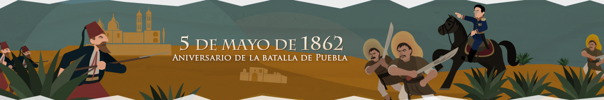

Batalla de Puebla
Batalla de Atlixco
La historia de la Batalla del 4 de Mayo de 1862 relata que, durante la segunda intervención francesa en México, en la hacienda de La Trapera, los atlixquenses y elementos del Ejército Mexicano, al mando de los generales Antonio Carvajal y Tomas O´Horan se enfrentaron a las tropas al servicio del Segundo Imperio Mexicano comandadas por José María Cobos y Leonardo Márquez.
Y que, gracias a este triunfo, el grupo conservador de Márquez no pudo lograr su objetivo de auxiliar al día siguiente a las tropas francesas del Conde de Lorencez en la Batalla de Puebla


 3
3
